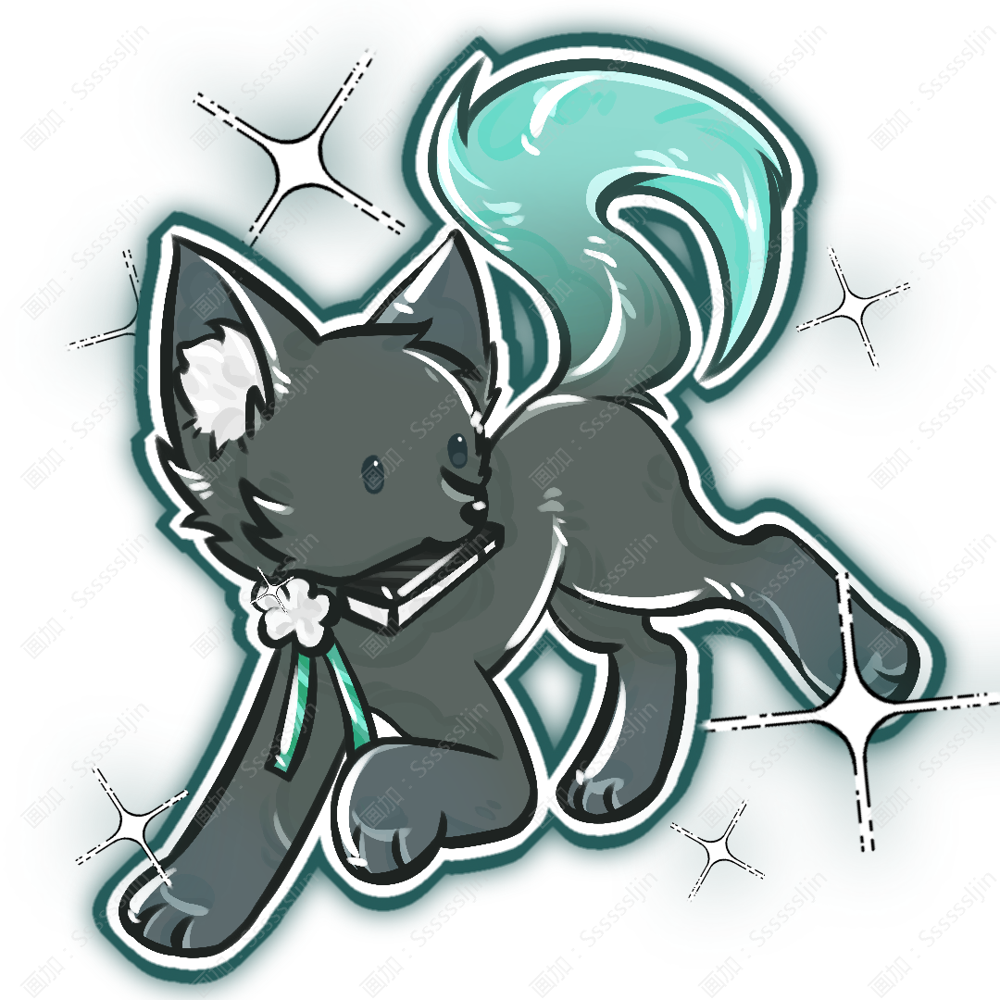

Mo Qing
墨青

姓名：墨青
英文：Mo Qing
種族：灵兽·狼
性別：女
生日：4月2日
身高：165cm
體重：52kg
墨绿色渐变蓝绿色的头发
墨蓝蓝瞳孔
头顶上有耳朵
外表沉静，情绪并不轻易表露。
对戏曲与舞台有很强的执着。
上台后气场会发生明显变化，比平时更加自信而锋利。
晞曜國的狼靈獸，以戲曲表演為生的唱戲者。
武器：戏曲折扇、水袖
属性：墨 · 影
技能：
「落墨」打开折扇，唱出第一句唱词，墨色从扇面蔓延而出，化成戏中人物的剪影进行攻击。
大招：
「流墨」展开水袖，以舞台身法挥动长袖。墨色随着水袖铺展开来，化作无数交错的影子，将敌人笼罩其中。
喜欢戏曲、舞台与各种传统乐器。
喜欢收藏漂亮的折扇。
喜欢安静地听雨，也喜欢夜晚独自练习唱腔。
喜欢研究不同地方的戏曲与民间故事。
希望将自己所喜欢的戏曲传给更多的人。
也希望能够用自己的歌声，让那些即将被遗忘的故事继续流传下去。
墨青來自晞曜國。她在戰爭前後陪伴寓幽，讓寓幽看見戰火之下普通人的故事，也用戲曲告訴她：痛苦不必被遺忘。
力量：★★★★☆
体力：★★★☆☆
智力：★★★★☆
魅力：★★★★★
幸运：★★★☆☆
戏曲、折扇